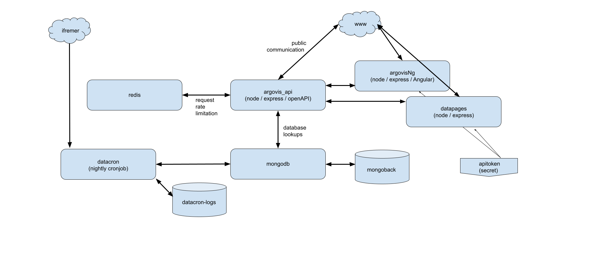

Argovis Kubernetes Deployment¶
Argovis is architected as a Kubernetes application, to take advantage of that platform’s scalability, security and orchestration features. In this tutorial, we’ll tour the high level structure of the application, and step through what to set up for a generic Kube environment.
Application Architecture¶
Argovis is deployed to Kubernetes as the following diagram:
Deployments:
an off-the-shelf containerized version of mongodb holds all our raw data.
argovis_api brokers access to mongo with a RESTful, OpenAPI compliant API.
argovis_redis is a redis database with some custom config is used by the API to keep track of API requests, and throttle users that issue fast requests that threaten to swamp the database or network.
argovisNg is an Angular based web frontend for exploring the data.
datapages are additional frontend pages built independently from Angular.
Cronjobs:
datacron runs nightly to fetch new profile data from ifremer and load it into mongodb.
PersistentVolumes:
mongobackis the database backing for mongodb, recommended at least 100 GB.datacron-logsis a small backing for the logs of the database update job, typically 10 GB.
Configs:
apitoken(secret): used to mount an API token for use by the frontend containers.
Networking:
The API and both frontends have nodePort services allowing ingress. Depending on Kube provider, ingress from the internet will be provided by differing objects; OKD uses Red Hat Routes, for example.
Both databases have clusterIP services for internal communication.
networkPolicies are applied to both databases to only allow access from pods with the label
app: api.
Setup¶
When deploying Argovis, perform the following steps. Details might change slightly depending on the specific Kube cluster being deployed to; see inline links for details.
First Time Setup¶
A few objects need to be created by hand the first time Argovis is deployed to a new cluster:
mongobackPV/PVC: 100 GB or bigger.
datacron-logsPV/PVC: about 10 GB.
apitokensecret: a secret with a single keytokencontaining a string for use as an API token by the frontend pods.
datacroncronjob: see source and deployment yaml here.
Once these have been created, you’re ready to deploy the application with Helm.
Deploying with Helm¶
See the deployment instructions in this repo for a Helm chart to deploy the five main deployments and networking elements of Argovis. After first-time setup is complete, code revisions can be managed with helm upgrade and helm rollback, and full teardowns and redeployments can be safely made with helm install and uninstall.
API Config¶
The first time you deploy to a new cluster, make sure to connect to mongo and register the api token you defined in the apitoken secret:
~ $ kubectl exec -it <mongo pod name> mongo > use argo > db.user.insertOne({key: "<token you defined in secret>", tokenValid: 1}) > exit